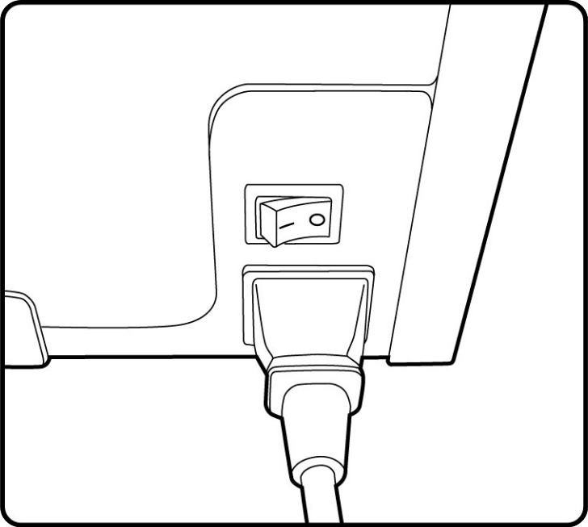
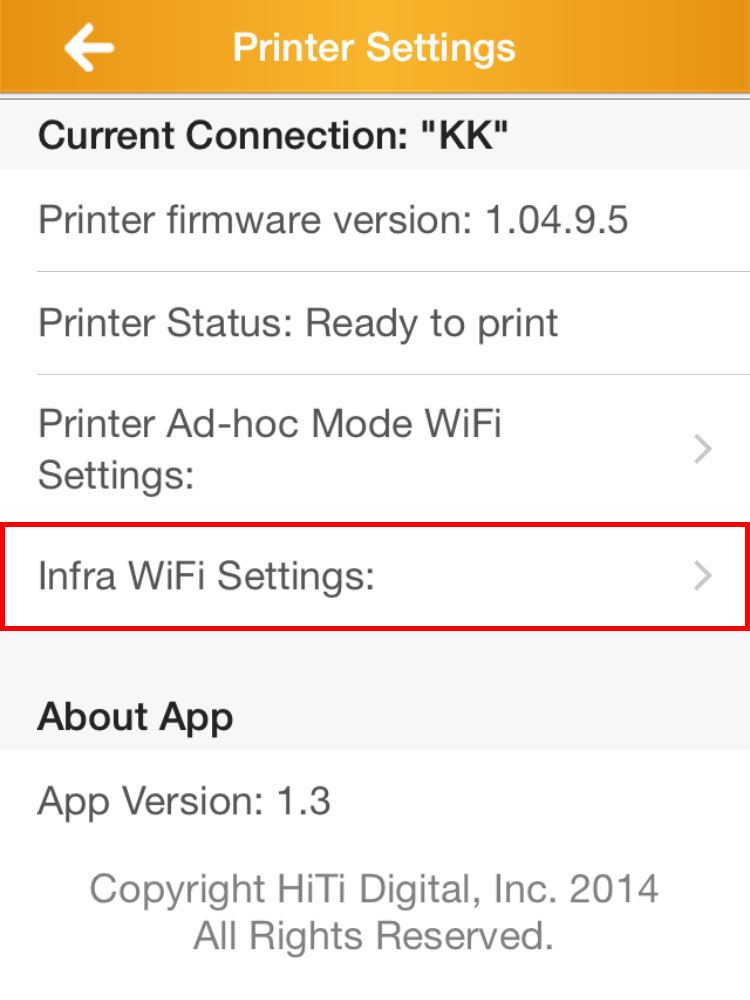
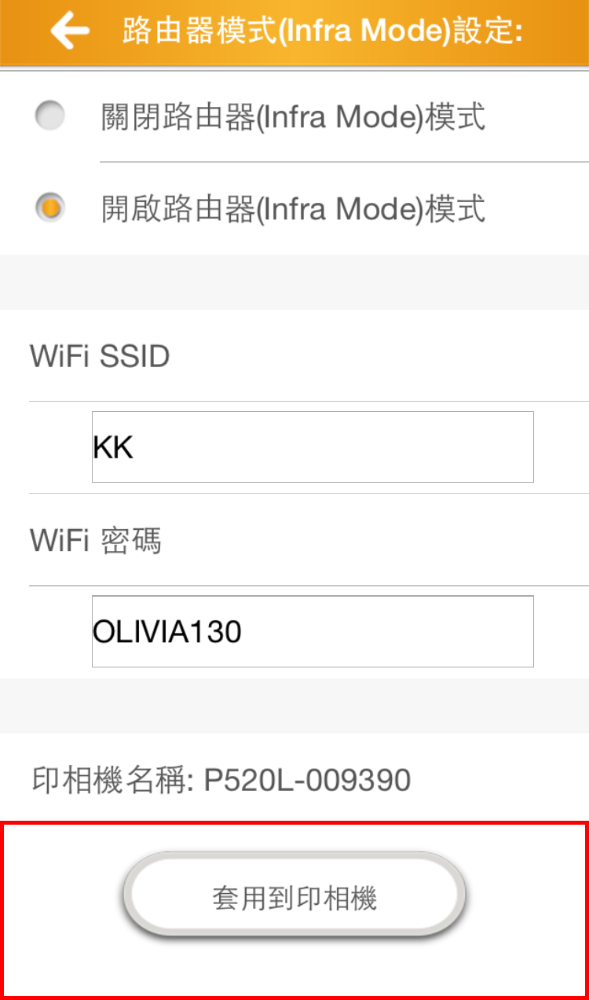

Quick Guide
HiTi photo printer / Set up the Printer
General connection before using the product
1. Connect PC/Laptop with USB-B type.
2. Plug in the power.

3. Make sure USB and power are well connected.
4. Power on the printer
Ribbon and paper installation
1. Press the button to open printer door.
2. Place the paper kit carefully and be aware of the color identification of the two side gears.
3. Stretch the paper and pass through the rollers until the sensor lights up.
4. Place the ribbon kit carefully and be aware of the color identification of the two side gears.
5. Do the same way to the other side.
6. Close the printer door and get ready to use the printer when LCD shows “Printer Ready”.
Prinbiz Quick Guide
Ad-hoc (peer to peer) mode:
Please turn on your smartphone Wi-Fi and connect with the printer using the following steps:
1. Select and connect with the printer (here the SSID P520L-009390 is an example of a default printer name).
2. Click on the gear icon to enter the setting page.
3. Click “Printer Settings”
(The page would not load if the connection between hand-held devices and printer is terminated.)
4. Click Ad-hoc Wi-Fi Settings.
5. In this page you will see “Wi-Fi SSID” and “Password”.
(1) Wi-Fi SSID: . Your printer’s Wi-Fi SSID will be displayed here. User is able to change the Wi-Fi SSID as preferred.
(2) Password: You can set a password for your printer or leave it blank, please note that the password must be 5 or 13 digits.
Remember your password and apply it to the printer.
6. A message will pop-out the when the settings are completed.
Infrastructure (Network) mode:
Make sure your printer firmware is updated to the latest version in order to use this function. (For example, printer P520L needs to update its firmware to 1.5 or above)
Please turn on your smartphone Wi-Fi and connect with the printer using the following steps:
1. Select and connect with the printer (here the SSID P520L-009390 is an example of a default printer name).
2. Click on the gear icon to enter the setting page.
3. Click “Printer Settings”
(The page would not load if the connection between hand-held devices and printer is terminated.)
4. Click Infra Wi-Fi Settings.
5. Select “Enable Infra Mode” and “Wi-Fi SSID”& “Wi-Fi Password” input will be shown at the bottom of the page.
The Wi-Fi SSID and Wi-Fi password here is intended to be set as a connection between the printer and a router/hotspot which are capable of bridging with the internet or a limited access point.
Simply select an available router, and set the connection between the printer and the router first.
Fill in the router name and password then press “Apply to Printer” for the printer to make the connection.
(The router’s Wi-Fi SSID are case-sensitive, make sure you input the SSID and password correctly)
6. A message will pop up the when the settings are completed.
7. Your printer is now connected to the router. Next, have your hand-held device connect with the router, so you can select the printer via hand-held device under the same environment.
8. Select desired printer model and printing method.
9. Select photos to print.
10. Choose any type of photo finishing then click the printer icon.
11. After clicking the printer icon, available printers under the same environment with your handset will be displayed, simply select your desired output printer.
12. Password may be required if the selected printer has been set to have one.
Set back to Ad-hoc mode:
Before setting printer back to Ad hoc mode, please make sure the smartphone and printer are both connected to the same router, and stay under the same environment.
1. Click on the gear icon to enter the setting page.
2. Click “Printer Settings”
The page would not load if the connection between hand-held devices and printer is terminated.).
3. Select the printer you’d like to switch back from infra mode (network mode) to Ad hoc mode (peer to peer mode).
4. Input printer password if required, then continues to the next step.
5. Select infra Wi-Fi Settings.

6. Select “Disable Infra Mode” to switch the printer back to Ad-hoc mode (peer to peer mode) and apply to printer.
7. Turn on the Wi-Fi and make sure the printer is back on the list.
Add Custom Borders
Prinbiz allows you to add custom borders into the app by following the simple rules and formats below. Then place your border files inside an SD card connected to the printer, and access them via Prinbiz App.
Border file dimensions for different paper size:
4x6 inches
Bleed size: 1280 x 1844 pixel
Print size: 1141 x 1754 pixel / 240 dpi / PNG
Border thumbnail size: 80 x 115 pixel /240 dpi/PNG
5x7 inches
Bleed size: 1544 x 2140 pixel
Print size: 1462 x 2059 pixel / 240 dpi / PNG
Border thumbnail size: 81 x 112 pixel /240 dpi/PNG
6x8 inches
Bleed size: 1844 x 2434 pixel
Print size: 1774 x 2351 pixel / 240 dpi / PNG
Border thumbnail size: 80 x 105 pixel /240 dpi/PNG
Each custom border must include 4 files; 1 horizontal border, 1 vertical border, 1 horizontal thumbnail, and 1 vertical thumbnail:
Horizontal Border / Horizontal thumbnail / Vertical border / Vertical thumbnail
When you have prepared the 4 files listed above, place and rename them by following the rules below (here we used a 4x6 inches frame as an example):
1. Please create a folder named PrinbizFrame.
2. Each of the 3 folders contains 2 folders(1 for vertical and 1 for horizontal borders).
3. Name each border file “pbc_filename.png”, for example, place pbc_prinbiz001.png inside a folder called prinbiz001. If you have more than one border, place the file pbc_prinbiz002.png inside a folder called prinbiz002.
4. Place all the horizontal border thumbnails inside the thumb folder, and name them “tbc_filename.png”.
5. All vertical border files inside the vborder folder are named exactly like the corresponding hborder folder.
Company Overview
HiTi Digital, Inc., a professional manufacturer and supplier of digital photo products and services, is well known for high-quality and innovative technology.
Founded in February 2001, known by the name of Hi-Touch Imaging Technologies, Inc., and has been highly praised for quality digital photo printers of ultra performance, stability and compact design. The strong technology and commitment for R&D expertise also led to impressive business of security card and digital image products. At the end of 2007, Hi-Touch announced its new name as HiTi Digital, Inc. with determination to expand its ambitions to the global marketplace and accomplish its pursuit of excellence.
HiTi Digital, Inc.,
Copyright Notice
Copyright® 2013 HITI DIGITAL, INC.
All Rights Reserved.
1. All content posted on Prinbiz(including Prinbiz App, Prinbiz PC website, Prinbiz mobile website), including text, photographs, images, audio, video, and other material, is subject to protection under the Copyright Act except for material that the Copyright Act provides shall not be the subject matter of copyright (e.g. the constitution, acts, and regulations, or speeches and news releases prepared by civil servants -- see Article 9 of the Copyright Act).
2. Material on Prinbiz that is protected under the Copyright Act may not be used without express permission or authorization from the holder of the economic rights in the work, except when used under fair use doctrine.
3. The "fair use" referred to above means the following:
(a) Where a work is publicly released on Prinbiz in the name of Prinbiz, hiti , the author is the HITI DIGITAL,INC and the work may, within the bounds of fair use, be reproduced, publicly broadcast, or publicly transmitted. When using material from Prinbiz, please provide proper attribution.
(b) Material on Prinbiz may be reproduced for non-commercial personal or home use.
(c) Within a reasonable scope, material that has been publicly released on Prinbiz may be quoted where necessary for reports, comment, teaching, research, or other legitimate purposes. When quoting material from Prinbiz, please provide proper attribution.
(d) For further information on fair use, see Articles 44 to 65 of the Copyright Act.
4. Electronic rights management information posted on Prinbiz shall not be removed or altered without permission except under the circumstances set out in the proviso under Article 80bis, paragraph 1 of the Copyright Act, to wit: (a) such removal or alteration is unavoidable for the lawful exploitation of this work due to technical limitation; or (b) it is technically necessary to conversion of a recording or transmission system.
操作說明
HiTi 印相機 / 印相機設定
一般連線
1. 請將印相機與電腦連線, 並使用隨機所附USB-B規格來使用
2. 插入電源線
3. 確保電源線與USB-B已完成連接
4. 開啟電源
色帶、相紙安裝說明
1. 按下如圖所示按鈕來開啟本產品
2. 相紙兩側齒輪有顏色的區別,以提醒客戶相紙安裝時需與機器上的顏色匹配置放
3. 拉出一段相紙並穿過機器正中的鐵軸直到下方的藍燈亮起
4. 色帶兩側有顏色區分, 用以提醒安裝時於機器的顏色需匹配置放
5. 同上一步驟
6. 關起印相機前蓋並確認螢幕顯示就緒後方可使用
Prinbiz 連線說明
點對點(Ad-hoc mode)模式 :
請開啟您手機的Wi-Fi功能，並與相片印相機連線後，再依序按照下述的步驟完成設定
1. 於Wi-Fi清單內選擇相片印相機的名稱，選擇後並建立連線(此處以預設印相機名稱P520L-009390為例)
2. 點選右下角圖示進入設定頁面
3. 點選印相機設定(若彈出視窗告知無法連線，請再回到上一步或檢查手機的無線網路與相片印相機的連線已確定建立)
4. 點選點對點(Ad-hoc Mode)設定
5. 在印相機點對點的設定頁面下會看到兩個欄位定
(1) Wi-Fi SSID: 此處的Wi-Fi SSID是為機器預設的名稱，使用者可自行修改
(2) 密碼: 在此可針對機台進行密碼的設定，可以留白或者輸入5或13個字元
並請於確認後點擊”套用到印相機”來完成設定
6. 系統將會跳出已變更印相機Wi-Fi SSID與密碼的提示
Infrastructure (網際網路模式) mode:
使用此模式前，請先確認您的相片印相機已更新至最新韌體版本(例如相片印相機P520L需要更新至韌體版本1.5(含)以上)
請開啟您手機的Wi-Fi功能，並與相片印相機連線後，再依序按照下述的步驟完成設定
1. 於Wi-Fi清單內選擇相片印相機的名稱，選擇後並建立連線(此處以預設印相機名稱P520L-009390為例)
2. 點選右下角圖示進入設定頁面
3. 點選印相機設定(若彈出視窗告知無法連線，請再回到上一步或檢查手機的無線網路與相片印相機的連線已確定建立)
4. 點選路由器模式(Infra Mode)設定
5. 點選開啟路由器(Infra Mode)模式, 則Wi-Fi SSID與Wi-Fi密碼的數入位置會在下方顯示
Wi-Fi SSID: 此欄位需填的Wi-Fi SSID是為任一個路由器、熱點或者有限制等的網路名稱
此頁面的設定目地在於透過使用者的手機針相片印相機與路由器進行連線
填寫完整的Wi-Fi SSID及Wi-Fi密碼(字母大小寫需注意)並且點擊套用到印相機來完成設定

6. 完成對相片印相機的設定後，目前相片印相機應正與該路由器進行連線，因此，請打開手機的Wi-Fi並且與該路由器進行連線，在此的目的是要讓手機與相片印相機並存於同一個網域底下，也就是讓手機與相片印相機都同時連結同一個路由器的意思。
請透過手機與該路由器進行連線
7. 選擇相片印相機型號與選擇所需要的列印服務

8. 選擇好照片後準備進行列印
9. 選擇好輸出的類型後準備進行列印
10. 在點選列印後，系統會彈出選擇印相機的視窗，這時可以看到先前我們所設定相片印相機的名稱在此清單內，若設定多台則會有多台的印相機可備選擇，因此請選定您要的印相機做為輸出的型號 (若是彈出錯誤的訊息，則代表相片印相機與路由器的連線未被完整建立，因此請透過相片印相機的LCM來確認目前的狀態為何)
11. 輸入相片印相機的密碼
輸入完成後輸出的照片會透過手機經由路由器傳到該相片印相機，並將照片列印出來。
將路由器(Infra Mode)模式切回點對點(Ad-hoc Mode)
將相片印相機切回點對點模式之前，請務必確認手機與相片印相機皆處於同一個網域底下
1. 點選右下角圖示進入設定頁面
2. 點選印相機設定(若彈出視窗告知無法連線，請再回到上一步或檢查手機的無線網路與相片印相機的連線已確定建立)
4. 選擇相片印相機以切換回點對點(Ad-hoc Mode)模式
5. 請輸入印相機的密碼
6. 點選關閉路由器(Infra Mode)模式，並套用到印相機
7. 打開手機Wi-Fi清單確認該相片印相機已出現在清單內，則代表印相機已回到點對點的模式
匯入邊框說明
Prinbiz App支援讓使用者自行匯入欲使用的邊框，只要依照以下檔案格式與命名方式，將檔案存放於SD卡中再透過APP連結印表機讀取即可
邊框原始檔案尺寸與格式對應表：
4x6尺寸
出血尺寸: 1280 x 1844 pixel
實際列印範圍: 1141 x 1754 pixel /240 dpi / PNG
邊框縮圖尺寸: 80 x 115 pixel/240 dpi/PNG
5x7 尺寸
出血尺寸: 1544 x 2140 pixel
實際列印範圍: 1462 x 2059 pixel / 240 dpi / PNG
邊框縮圖尺寸: 81 x 112 pixel/240 dpi/PNG
6x8尺寸
出血尺寸: 1844 x 2434 pixel
實際列印範圍: 1774 x 2351 pixel / 240 dpi / PNG
邊框縮圖尺寸: 80 x 105 pixel/240 dpi/PNG
每一款邊框的原始檔與縮圖檔，都需要提供對應的直式與橫式各一，故一個邊框需要提供四個檔案：
橫式編框原始檔 / 橫式邊框縮圖 / 直式邊框原始檔 / 直式邊框縮圖
當您準備好以上四個檔案後，需要按照以下邊框放置方式與命名，此處以一款4x6尺寸的邊框為例：
1. 請新增一個資料夾，命名為PrinbizFrame
2. 每個尺寸的資料夾裡面各有兩個資料夾，hborder代表橫向邊框；vborder代表直向邊框
3. Prinbiz001資料夾為邊框名稱，裡面放置橫的原始檔案，命名方式為”pbc_檔案名稱.png”。如有第二款邊框，額外再開一個prinbiz002資料夾，裡面放置pbc_prinbiz002.png的橫向邊框原始檔
4. hborder下的所有橫向邊框的縮圖都放在此資料夾，命名方式為”tbc_檔案名稱.png”
5. vborder裡面資料夾與命名方式均比照hborder，每個邊框都要有vborder與hborder的對應檔案
誠研科技簡介
誠研科技(HiTi)創立於2001年2月，憑藉領先的研發技術及對高品質理念的堅持，以熱昇華輸出為核心技術，研發高品質數位相片印表機、數位卡片印表機及週邊耗材等相關產品，為專業數位影像輸出系統設計、製造及銷售的公司。透過自有品牌「HiTi」 ，成功將產品深入歐美及全球新興印表機市場。HiTi擁有全台領先，涵蓋電子、機構、韌體、軟體及色彩學5大領域的專業研發團隊，為全台唯一專注於全方位數位相片產業之領導品牌。誠研科技於2007年12月13日掛牌上市，並正式啟用全新品牌識別標誌及企業英文名稱－「HiTi Digital, Inc.」，是全台第一家專注於全方位數位影像產業發展的上市公司。
HiTi Digital, Inc.,
Copyright Notice
Copyright® 2013 HITI DIGITAL, INC.
All Rights Reserved.
1. All content posted on Prinbiz(including Prinbiz App, Prinbiz PC website, Prinbiz mobile website), including text, photographs, images, audio, video, and other material, is subject to protection under the Copyright Act except for material that the Copyright Act provides shall not be the subject matter of copyright (e.g. the constitution, acts, and regulations, or speeches and news releases prepared by civil servants -- see Article 9 of the Copyright Act).
2. Material on Prinbiz that is protected under the Copyright Act may not be used without express permission or authorization from the holder of the economic rights in the work, except when used under fair use doctrine.
3. The "fair use" referred to above means the following:
(a) Where a work is publicly released on Prinbiz in the name of Prinbiz, hiti , the author is the HITI DIGITAL,INC and the work may, within the bounds of fair use, be reproduced, publicly broadcast, or publicly transmitted. When using material from Prinbiz, please provide proper attribution.
(b) Material on Prinbiz may be reproduced for non-commercial personal or home use.
(c) Within a reasonable scope, material that has been publicly released on Prinbiz may be quoted where necessary for reports, comment, teaching, research, or other legitimate purposes. When quoting material from Prinbiz, please provide proper attribution.
(d) For further information on fair use, see Articles 44 to 65 of the Copyright Act.
4. Electronic rights management information posted on Prinbiz shall not be removed or altered without permission except under the circumstances set out in the proviso under Article 80bis, paragraph 1 of the Copyright Act, to wit: (a) such removal or alteration is unavoidable for the lawful exploitation of this work due to technical limitation; or (b) it is technically necessary to conversion of a recording or transmission system.
操作说明
HiTi 印相机/ 印相机设定
一般联机
1. 请将印相机与计算机联机, 并使用随机所附的USB-B规格来使用
2. 插入电源线
3. 确保电源线与USB-B已完成连接
4. 开启电源
色带、相纸安装说明
1. 按下如图所示按钮来开启本产品
2. 相纸两侧齿轮有颜色的区别,以提醒客户相纸安装时需与机器上的颜色匹配置放
3. 拉出一段相纸并穿过机器正中的铁轴直到下方的蓝灯亮起
4. 色带两侧有颜色区分, 用以提醒安装时于机器的颜色需匹配置放
5. 同上一步骤
6. 关起印相机前盖并确认屏幕显示就绪后方可使用
rinbiz 连线说明
点对点(Ad-hoc mode)模式:
请开启您手机的Wi-Fi功能，并与相片印相机联机后，再依序按照下述的步骤完成设定
1. 于Wi-Fi清单内选择相片印相机的名称，选择后并建立联机(此处以预设印相机名称P520L-009390为例)
2. 点选右下角图示进入设定页面
3. 点选印相机设定(若弹出窗口告知无法联机，请再回到上一步或检查手机的无线网络与相片印相机的联机已确定建立)
4. 点选点对点(Ad-hoc Mode)设定
5. 在印相机点对点的设定页面下会看到两个字段
(1) Wi-Fi SSID: 此处的Wi-Fi SSID是为机器预设的名称，使用者可自行修改
(2) 密码: 在此可针对机台进行密码的设定，可以留白或者输入5或13个字符
并请于确认后点击”套用到印相机”来完成设定
6. 系统将会跳出已变更印相机Wi-Fi SSID与密码的提示
Infrastructure (因特网模式) mode:
使用此模式前，请先确认您的相片印相机已更新至最新韧体版本(例如相片印相机P520L需要更新至韧体版本1.5(含)以上)
请开启您手机的Wi-Fi功能，并与相片印相机联机后，再依序按照下述的步骤完成设定
1. 于Wi-Fi清单内选择相片印相机的名称，选择后并建立联机(此处以预设印相机名称P520L-009390为例)
2. 点选右下角图示进入设定页面
3. 点选印相机设定(若弹出窗口告知无法联机，请再回到上一步或检查手机的无线网络与相片印相机的联机已确定建立)
4. 点选路由器模式(Infra Mode)设定
5. 点选开启路由器(Infra Mode)模式, 则Wi-Fi SSID与Wi-Fi密码的数入位置会在下方显示
Wi-Fi SSID: 此字段需填的Wi-Fi SSID是为任一个路由器、热点或者有限制等的网络名称
Wi-Fi 密码: 此字段需填的Wi-Fi SSID是为任一个路由器、热点或者有限制等的网络密码
此页面的设定目地在于透过使用者的手机针相片印相机与路由器进行联机
填写完整的Wi-Fi SSID及Wi-Fi密码(字母大小写需注意)并且点击套用到印相机来完成设定
6. 完成对相片印相机的设定后，目前相片印相机应正与该路由器进行联机，因此，请打开手机的Wi-Fi并且与该路由器进行联机，在此的目的是要让手机与相片印相机并存于同一个网域底下，也就是让手机与相片印相机都同时连结同一个路由器的意思
请透过手机与该路由器进行联机
7. 选择相片印相机型号与选择所需要的打印服务
8. 选择好照片后准备进行打印
9. 选择好输出的类型后准备进行打印
10. 在点选打印后，系统会弹出选择印相机的窗口，这时可以看到先前我们所设定相片印相机的名称在此清单内，若设定多台则会有多台的印相机可备选择，因此请选定您要的印相机做为输出的型号 (若是弹出错误的讯息，则代表相片印相机与路由器的联机未被完整建立，因此请透过相片印相机的LCM来确认目前的状态为何)
11. 输入相片印相机的密码
输入完成后输出的照片会透过手机经由路由器传到该相片印相机，并将照片打印出来。
将路由器(Infra Mode)模式切回点对点(Ad-hoc Mode)
将相片印相机切回点对点模式之前，请务必确认手机与相片印相机皆处于同一个网域底下
1. 点选右下角图示进入设定页面
2. 点选印相机设定(若弹出窗口告知无法联机，请再回到上一步或检查手机的无线网络与相片印相机的联机已确定建立)
3.点选路由器模式(Infra Mode)设定
4. 选择相片印相机以切换回点对点(Ad-hoc Mode)模式
5. 请输入印相机的密码
6. 点选关闭路由器(Infra Mode)模式，并套用到印相机
7. 打开手机Wi-Fi清单确认该相片印相机已出现在清单内，则代表印相机已回到点对点的模式
汇入边框说明
Prinbiz App支持让使用者自行汇入欲使用的边框，只要依照以下文件格式与命名方式，将档案存放于SD卡中再透过APP链接打印机读取即可
边框源文件尺寸与格式对应表：
4x6尺寸
出血尺寸: 1280 x 1844 pixel
实际打印区域: 1141 x 1754 pixel /240 dpi / PNG
边框缩图尺寸: 80 x 115 pixel/240 dpi/PNG
5x7 尺寸
出血尺寸: 1544 x 2140 pixel
实际打印区域: 1462 x 2059 pixel / 240 dpi / PNG
边框缩图尺寸: 81 x 112 pixel/240 dpi/PNG
6x8尺寸
出血尺寸: 1844 x 2434 pixel
实际打印区域: 1774 x 2351 pixel / 240 dpi / PNG
边框缩图尺寸: 80 x 105 pixel/240 dpi/PNG
每一款边框的原始档与缩图档，都需要提供对应的直式与横式各一，故一个边框需要提供四个档案：
横式编框原始档 / 横式边框缩图 / 直式边框原始档 / 直式边框缩图
当您准备好以上四个档案后，需要按照以下边框放置方式与命名，此处以一款4x6尺寸的边框为例：
1. 请新增一个文件夹，命名为PrinbizFrame
2. 每个尺寸的文件夹里面各有两个文件夹，hborder代表横向边框；vborder代表直向边框
3. Prinbiz001文件夹为边框名称，里面放置横的源文件，命名方式为”pbc_文件名.png”。如有第二款边框，额外再开一个prinbiz002文件夹，里面放置pbc_prinbiz002.png的横向边框原始档
4. hborder下的所有横向边框的缩图都放在此文件夹，命名方式为”tbc_文件名.png”
5. vborder里面文件夹与命名方式均比照hborder，每个边框都要有vborder与hborder的对应档案
诚研科技简介
诚研科技(HiTi)创立于2001年2月，凭借领先的研发技术及对高质量理念的坚持，以热升华输出为核心技术，研发高质量数码相片打印机、数字卡片打印机及外围耗材等相关产品，为专业数字影像输出系统设计、制造及销售的公司。透过自有品牌「HiTi」 ，成功将产品深入欧美及全球新兴打印机市场。HiTi拥有全台领先，涵盖电子、机构、韧体、软件及色彩学5大领域的专业研发团队，为全台唯一专注于全方位数码相片产业之领导品牌。诚研科技于2007年12月13日挂牌上市，并正式启用全新品牌识别标志及企业英文名称－「HiTi Digital, Inc.」，是全台第一家专注于全方位数字影像产业发展的上市公司。
HiTi Digital, Inc.,
Copyright Notice
Copyright® 2013 HITI DIGITAL, INC.
All Rights Reserved.
1. All content posted on Prinbiz(including Prinbiz App, Prinbiz PC website, Prinbiz mobile website), including text, photographs, images, audio, video, and other material, is subject to protection under the Copyright Act except for material that the Copyright Act provides shall not be the subject matter of copyright (e.g. the constitution, acts, and regulations, or speeches and news releases prepared by civil servants -- see Article 9 of the Copyright Act).
2. Material on Prinbiz that is protected under the Copyright Act may not be used without express permission or authorization from the holder of the economic rights in the work, except when used under fair use doctrine.
3. The "fair use" referred to above means the following:
(a) Where a work is publicly released on Prinbiz in the name of Prinbiz, hiti , the author is the HITI DIGITAL,INC and the work may, within the bounds of fair use, be reproduced, publicly broadcast, or publicly transmitted. When using material from Prinbiz, please provide proper attribution.
(b) Material on Prinbiz may be reproduced for non-commercial personal or home use.
(c) Within a reasonable scope, material that has been publicly released on Prinbiz may be quoted where necessary for reports, comment, teaching, research, or other legitimate purposes. When quoting material from Prinbiz, please provide proper attribution.
(d) For further information on fair use, see Articles 44 to 65 of the Copyright Act.
4. Electronic rights management information posted on Prinbiz shall not be removed or altered without permission except under the circumstances set out in the proviso under Article 80bis, paragraph 1 of the Copyright Act, to wit: (a) such removal or alteration is unavoidable for the lawful exploitation of this work due to technical limitation; or (b) it is technically necessary to conversion of a recording or transmission system.